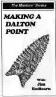

Videos
 |
The Art of Flintknapping Video
Companion
with D. C. Waldorf
-
Geared for beginner, but informative for the advanced knapper.
-
Covers raw material processing.
-
Bi-face reduction by percussion.
-
Holding positions.
-
Pressure flaking.
-
1 hour 43 minutes. Price $25.00.
|
 |
Working Obsidian
with D. C. Waldorf, Adventures in the Pacific Northwest
-
Collection of material at Glass Buttes, Oregon.
-
Demonstration of making a large point out of obsidian.
-
Discussion on rock saws and slabbing material.
-
Instructions on how to use small chips and irregular chunks
for making points.
-
2 hours. Price $25.00
To order
|
 |
Thebes Points, and their Variants
with D. C. Waldorf
-
D.C. Waldorf demonstrates the production of a standard Thebes type
as well as its variants, the e-notch and Lost Lake types.
-
He uses traditional tools throughout.
-
Lots of close ups with the emphasis being on notching.
-
Full explanations of each step.
-
1 hr. 38 minutes. Price $25.00
To order
|
 |
Novaculite, -from pit to point
with D. C. Waldorf
-
Novaculite is prized for making whetstones as well as knapping.
-
Visit an ancient Novaculite quarry as well as a modern one. See
the modern uses and quarrying of this stone
-
Discussion on heat treating it for knapping.
-
Instructions on how to make a large blade using traditional tools.
-
A full 2 hour tape. Price $25.00
To order
|
 |
Flake over Grinding
with Dale Cannon
-
Flake over grinding is a form of "lapidary knapping."
-
Blanks are ground to a predetermined shape using lapidary
equipment, then flaked to produce spectacular ribbon patterns.
-
Dale demonstrates the entire production of knife including making
a stone handle.
-
Full Instructions on techniques and equipment needed.
-
1 hr. 48 minutes. Price $25.00
To order
|
 |
Roasting Rocks
The Art and Science of Heat
Treating
Make
flint knapping easier! D.C. Waldorf shows you how to improve the
workability of flint and chert through the magic of heat treating.
-
First he demonstrates the ancient art
of heat treating in the ground.
-
The he takes us to his shop to load
and fire a modern electric kiln.
-
He demonstrates the use of "The Poor
Man's Kiln," the common roaster oven.
-
Methods are compared and results are
shown.
-
Comes with a 20 page "recipe book".
-
VHS, 50 minutes. Price
$20.
To order
|
|
Introduction to Flint Knapping, with
Bill Metcalfe NEW
EDITION!
- This tape is directed at beginners.
- Bill shows you how to get started in knapping with simple
methods and using copper tools.
- Includes spalling large nodules, edging a slab, finishing
and notching.
- Lots of terrific close ups.
- 1 hr. 18 minutes. Price is $25.
To
order
|
 |
Lap Knapping by
Craig Ratzat
-
For all knappers interested in making lapped points.
-
Step by step instruction from pressure flaking to notching rock slabs to
create authentic looking arrow points.
-
2 hours, Price $22.00
To order
|
 |
Caught Knapping
with Craig Ratzat
-
For beginner to intermediate knapper.
-
Deals strictly with knapping obsidian.
-
Show quarrying to production of points and blades.
-
details tools, hammer stones, antler billets and copper billets.
-
2 hours. Price $23.00
To order
|
 |
Water Creek Knap-in, 1999
-
This tape was shot at the Watercreek Knap-in.
Relive the excitement in
this excellent new tape.1 hr.
-
Price $20.00
To order
|
 |
Flintknapping by
Bruce Bradley, Ph.D.
As a Prehistoric hunter, how would you go about providing
tools needed for daily survival? This film demonstrates the fundamentals
of the art of Flintknapping. Bruce Bradley explains and shows the process
of stone tool manufacture. Watch as each piece is skillfully produced duplication
this ancient skill as you reach a better understanding of our past.
An internationally renowned expert, Bruce Bradley is an
active professional archaeologist and educator. His lectures are in constant
demand in the United States and abroad.
|
 |
Making the Hardin Point, with
Jim Redfearn.
In this new video, Jim Redfearn demonstrates production
techniques to make a Hardin Point. It includes lots of close-ups and
shows the proper sequence for making this point type. Tape includes hilarious
out-takes segment called, "So You Want to Make a Flint Knapping
Video?"Jim uses copper billets, which are becoming a popular
substitute for antler. This tape is aimed at the beginner to intermediate
knapper. 1 Hr. 12 minutes. Price $25. To order
|
 |
Making a Dalton Point, with
Jim Redfearn.
In his second video, Jim Redfearn demonstrates production
techniques to make a classic Sloan Dalton. However, he works a very
difficult piece of stone in order to demonstrate the reduction of a
"worst case scenario." It has square edges and is too narrow.
But Jim shows how to handle something of this shape. It includes lots of close-ups and
shows the proper sequence for making this point type. Tape includes a bonus, a
"Behind the Scenes" special feature.Jim uses copper billets, which are becoming a popular
substitute for antler. This tape is aimed at the intermediate
knapper. 1 Hr. 40 minutes. Price $25. To order
|
 |
Making the Clovis Point,
with Jim Redfearn
In his new video "Making the Clovis Point,"
Jim Redfearn shares his technique for knapping large bifaces. Here
he works a large slab of Fort Payne chert, showing you how to edge the slab
and then flake it into a large Clovis point. Jim is one of the few knappers
who can routinely flute Clovis points without the aid of any
machines, jigs or mechanical devises. As with the other "Masters'
Series" videos, everything is explained in detail and it's done with great
photography. 1 hr. 18 minutes.
Price $25. To order.
|